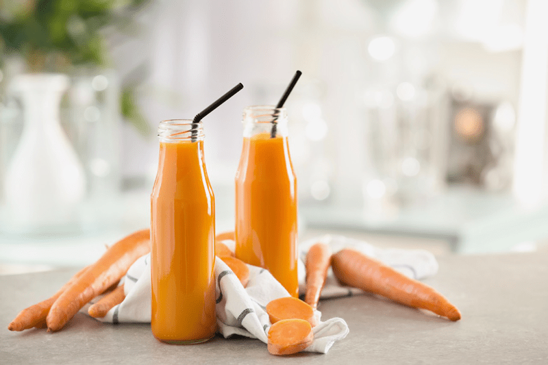

#1 – Juicer – Why and What I Recommend
Looking to ramp up your daily intake of fruits and veggies? Looking to cleanse your body? Juicing feeds us with high concentrations of antioxidants, antimicrobials, chlorophyll, and many other wonderous nutrients. Owning a juicer is a wonderful tool for saturating your body with nutrients. I recommend that you invest in a juicer at some point in your healthy eating journey. You won’t regret the effects that it can have on your body!

Two basic types of juicers: masticating and extracting.
What to Consider When Buying a Juicer
 Ease of Use
Ease of Use
You want a juicer that is simple to assemble, disassemble, and clean. If your juicer is made up of too many parts that it is a headache to put together and clean, chances are that you won’t feel inspired to juice.
While the ease of a simple machine is desired, the main focus of juicing is the quality of the juice once made. With this in mind, look for a masticating juicer which will produce juice that is of higher quality and nutrients.
I also prefer a juicer that has a large feeding tube, so you can put in large chunks, enabling a person to skip the time-consuming chore of chopping all of the produce into small pieces.
Price
If you are new to juicing, you may find yourself hesitant to spend money on a higher priced model. However, it’s not only the price of the juicer that you should consider but the cost of the whole juicing process over time. Cheaper juicers are not as efficient as the masticating ones. Therefore, they yield less juice and waste produce which all equals money.
Noise Level
In our household, we don’t like to wake up to jarring noises. If you rise before others, you do not want your morning juicing to wake up the rest of the family. You would want a juicer that works quietly so as to keep the peace in your home. In general, the cheaper, high-speed centrifugal juicers are the noisiest while the slow-moving masticating and triturating ones are the quietest.
Warranty
It is imperative that your juicer comes with a warranty to cover any unfortunate factory defects that may not be evident at the outset. Lack of a warranty is often associated with cheaper brands and models of juicers. Always check to see what the warranty is on each juicer that you are considering to purchase.
Power
When it comes to extracting the juice of highly-fibrous leafy greens such as wheat-grass and spinach, only the more powerful juicers can do the job. In general, a minimum of 400 watts is needed for extracting the juicy goodness of tough vegetables.
I hope you found this helpful. I laid out a pretty basic outline of what to look for as you aim to ramp up the nutrients in your day to day life. Below I have listed the two juicers that I have in my kitchen. I have owned the Omega since 2009 and the Champion since 2013.
Let’s Go Shopping
Masticating Juicers
- Champion Juicer G5-PG710 – Commercial Heavy Duty Juicer
- Powered by a full 1/3 horsepower, heavy-duty General Electric motor.
- Use as a homogenizer to make frozen sorbets, baby foods, fruit sauces, juices, and nut butters.
- Large 1.75″ Diameter Feed Tube.
- 10-Year Limited Manufacturer’s Warranty.
- All parts 100% FDA nylon, stainless steel shaft.
- Omega VRT350 Heavy Duty Dual-Stage Vertical Single Auger Juicer
- Low speed, masticating style juicing system.
- Juicer processes at 80 RPMs, squeezing instead of grinding. This allows the juice to maintain its pure color, natural taste, vitamins, and nutrients.
- Small, vertical footprint takes up less space in your kitchen.
- The low-speed system limits froth and foam preventing oxidation.
- Three settings: On, Off and Reverse. Reverse is an option to use when something is stuck or you need to unclog.
- Hurom Slow Juicer (I used this one every single day!)
- Stainless steel: The HZ slow juicer comes with a stainless steel finish and LED indicators
- Slow Squeeze Technology: The HZ slow juicer rotates at a speed of just 43 revolutions per minute to mimic the motion of hand squeezing juice
- Taste & Pulp Control: Juice created with a Hurom slow juicer is fresh, unprocessed and pure. Cord Length: 4.6 feet, Standard Usage Up to 30 minutes continuously
- Yield: Our unique low-speed auger squeezes every drop of juice, resulting in bone-dry pulp. Chamber Capacity: 16.9 fluid ounce
- Works Quietly: A near-silent AC motor works efficiently using just 150 watts of power which means you can enjoy cold-pressed juice at home without the noise caused by traditional juicers and blenders
Nouveauraw.com is a participant in the Amazon Services LLC Associates Program, an affiliate advertising program designed to provide a means for us to earn fees by linking to Amazon.com and affiliated sites – at no extra cost to you.
Thank you for your support! amie sue
© AmieSue.com